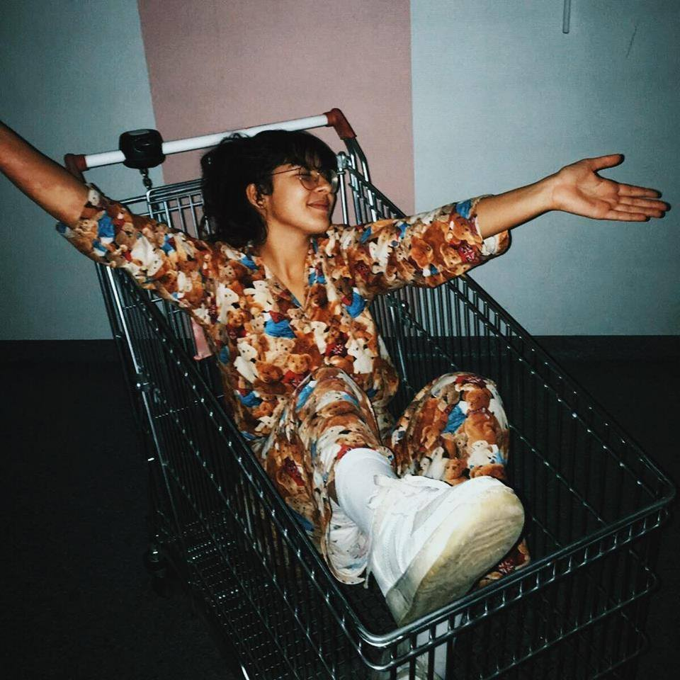

<!DOCTYPE html>
<html>
	<head> 
	<title> Lina's profile</title>
		<meta name="description" content="Welcome to Lina's world !">
			<meta charset="utf-8">
				<script src="https://kit.fontawesome.com/802d021292.js" crossorigin="anonymous">
				</script>
					<link rel="stylesheet" type="text/css" href="style.css">
	</head>
	</html>


<div class="container">
	<div class="card-pink" id="introduction">
		<h1> Who are you, Lina?</h1>
			
				<p> Welcome to my website ! Today we are going to learn more about Lina Benaoumar. Also, I always wondered why we happen to have a feeling of déjà-vu.. if you want to know more about it : click down here ! 
				</p>
					<a href="https://www.sciencedirect.com/science/article/abs/pii/S0035378713000064"  target="_blank" class="btn-green">En savoir plus</a>	
	</div>

	<div> 
		<div class="card-pink"> 
		<h2> Present yourself in three words </h2>
			<p> 
				<ul>
					<li> <em>Optimistic</em> : like our famous Edith Piaf, I want to see life in pink (yellow for me). 
					</li>
					<li> <em>Determined</em>: "Each of us, each Self, is eternal, deathless, one with the power that created the universe." Here is my motto. 
					</li>
					<li> <em>Passionate</em> : to answer this point, I would like to quote Rousseau. "Malheur à qui n'a plus rien à désirer ! il perd pour ainsi dire tout ce qu'il possède. On jouit moins de ce qu'on obtient que de ce qu'on espère, et l'on n'est heureux qu'avant d'être heureux." </li>
				</ul>
			</p>
		</div>


	<div class="card-pink"> 
			<h2> What is your journey ? </h2>
			<p> 
				<ol>
						<li> 
							<strong>regional swimming tounament </strong>: during high school, I have been participating to numerous regional tournaments. I swam 5h a day !  </li>
					
						<li> 
							<strong> music conservatory diploma in 2018 </strong>: after almost 10 years in the conservatory, I finally graduated in theorical and piano classes. </li>
					
						<li> 
							<strong> Preparationary classes </strong> : Between 2018 and 2020 I have been in preparationary classes in Strasbourg, France. It was a great experience to overcome your own limits and learn more about yourself ! </li>
						<li> <strong> Kedge Business school </strong> : Admitted in Kedge in 2020, I am currently in L3 PGE. </li>
				</ol>
			</p>
		</div>


	<div class="card-pink"> 
			<h2> What are your projects ? </h2>
				<p> 
					<ul>
						<li> Book : I am currently working on a book about human desires with an old classmate of mine. We gave ourself 5 years until the publication. 
						</li>

						<li> Programming : I started to learn programmation (Python) in self-taught. It was fixed  out of curiosity : to satisfy my knowledge desire .  
						</li>

		  				<li> Speech context : I enrolled in a speech contest this year organsied by Kedge Busines School. It was done on impulsion, basically to test my own limits. 
		  				</li> 
		  	 		</ul>
		 		 </p>
		</div>


	<div class="card-pink"> 
		<h3> Follow me!</h3>
		  <ul class="list-inline">
		  	<li> 
		  		<a href="https://www.facebook.com/linabenaoumar"target="_blank">
		  			<i class="fab fa-facebook-square"></i>
		  		</a>
		  	</li>
		  	<li> 
		  		<a href="https://www.instagram.com/alinmaou/"target="_blank"><i class="fab fa-instagram"></i>
		  		</a> 
		  	</li>
		 </ul>
	</div>


		<form>
		<input type="email" name="email">
		<input type="password" name="password">
		<input type="submit" value="sign up">
		</form>
	</div>
</div>
